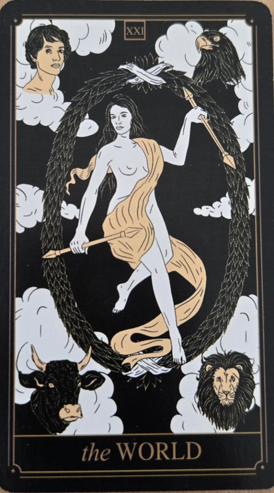

Svet je poslednou kartou Veľkej arkány a predstavuje dokončenie, naplnenie a celistvosť. Symbolizuje úspešné ukončenie jednej cesty a pripravenosť začať novú.
Je to karta rovnováhy medzi skúsenosťami, poznaním a osobným rastom.
Karta symbolizuje splnenie cieľov, úspech a pocit úplnosti. Naznačuje, že dôležitý životný cyklus sa blíži ku koncu alebo bol úspešne dokončený.
Prináša pocit harmónie a spokojnosti.
V strede karty býva postava obklopená vencom alebo kruhom, ktorý symbolizuje jednotu a zavŕšenie.
Štyri bytosti v rohoch karty často predstavujú rovnováhu medzi rôznymi aspektmi života.
Svet je poslednou kartou Veľkej arkány, no zároveň naznačuje nový začiatok. Po dokončení jednej cesty sa totiž vždy otvára ďalšia.